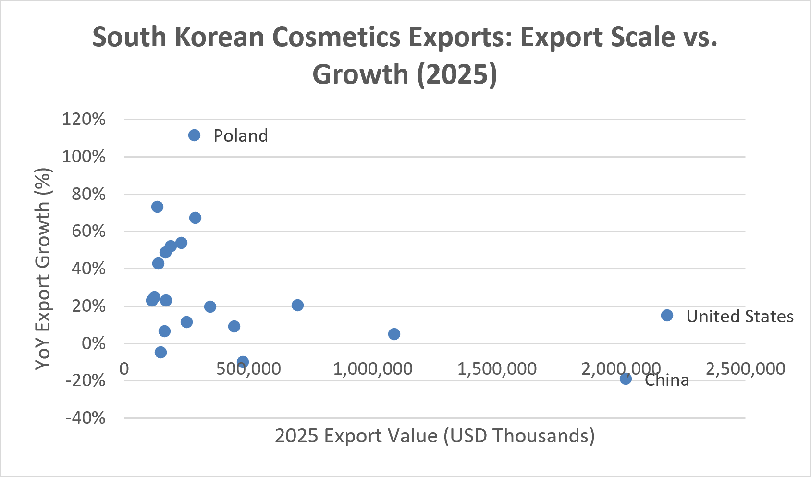

← Back to executive case study
ASK — Defining the Business Problem
Business scenario: As a Business Intelligence Analyst for a fictional South Korean multi-brand cosmetics manufacturer/exporter, I am tasked with helping the VP of International Business Development identify opportunities for international growth.
Business objective: Determine which geographic markets, product categories, and potential partnerships warrant further investment or investigation, using South Korea's cosmetics export and production data.
Data source: South Korea's Ministry of Food and Drug Safety (MFDS), 2025 Cosmetics Industry Statistics. An English translation and AI-generated Excel workbook serve as the starting materials for validation and analysis.
Initial observation: Between 2024 and 2025, China's share of South Korean cosmetics exports declined from 24.5% to 17.7%, while the United States increased from 18.7% to 19.1%. This prompted me to investigate where international growth opportunities may be emerging.
My approach: During brainstorming, I considered several analytical directions, including export concentration, production trends, and the roles of ODMs and MAHs. I independently researched the relationship between these business classifications and chose a multi-brand manufacturer/exporter scenario to make broader use of the available dataset.
Rather than focus exclusively on explaining historical performance, I decided to use historical trends to inform forward-looking growth strategies.
Key metrics: Export value, year-over-year growth, geographic market share, production value, and manufacturer performance. Final metrics will be validated against the source data.
Intended outcome: Provide evidence-based market prioritization recommendations to support international expansion and resource allocation decisions.
02 / PREPARE — Understanding the Data
Data sources. I selected the South Korean Ministry of Food and Drug Safety's (MFDS) 2025 Cosmetics Production, Export, and Import Statistics, released May 22, 2026. The report provides official industry data on international trade, product categories, manufacturers, and responsible distributors.
Data organization. I used an English translation of the government report and an Excel workbook generated by Gemini. The workbook organizes the information into 10 worksheets, including country-level exports, product-category performance, production statistics, ODMs, and responsible distributors/MAHs.
Credibility and relevance. The MFDS is an authoritative primary source for South Korean cosmetics industry statistics. Its data is directly relevant to evaluating international growth opportunities. However, the AI-generated workbook is a secondary transformation that must be checked against the government report.
Data integrity and limitations. The analysis requires consistent reporting periods, units, and company classifications. Export figures are reported in USD, while production values are reported in KRW. Industry-level exports cannot be interpreted as individual manufacturers' export revenue, and export growth alone cannot establish market profitability or future demand.
Licensing and accessibility. The translated report includes a Korean government open-use notice. Publication permissions and attribution requirements will be confirmed before distributing the dataset or translated material. The final case study will identify its sources and explain relevant terminology.
Preparation outcome. The selected sources provide a suitable foundation for investigating geographic diversification and international growth. The next phase will validate the workbook's calculations, check for errors, and prepare the relevant tables for analysis.
03 / PROCESS — Cleaning and Validating the Data
I used Google Sheets to examine and validate four worksheets covering country-level exports, product-category exports, production by category, and leading brands and ODM manufacturers.
I checked for duplicate records, missing values, numeric data types, and inconsistencies in company classifications. I also independently recalculated selected year-over-year growth rates and compared key figures with the original MFDS report.
Two important exceptions required attention. France's 2024 export value was absent from the source's top-20 country table, although its reported 73.2% growth was verified against the original report. In the manufacturer dataset, nine companies lacked 2024 production figures because their historical values were not included in the published tables.
I preserved these missing values rather than replacing them with zero, retained the distinction between USD exports and KRW production values, and kept brands and ODM manufacturers separately classified.
These checks established a documented foundation for analyzing geographic growth, product-category performance, and manufacturing opportunities.
04 / ANALYZE — Identifying Market Trends and Commercial Opportunities
Analytical Approach
My objective was to identify geographic growth patterns and potential commercial opportunities within South Korea's cosmetics industry, using 2024–2025 export and production data.
I organized the data to compare export values, year-over-year (YoY) growth rates, absolute changes, and geographic market shares. Examining these metrics together helped me distinguish established export markets from smaller destinations experiencing rapid growth.
Before conducting the analysis, I performed documented data validation checks, including reviewing duplicate records, missing values, numeric formats, aggregate totals, and calculated growth rates. I also compared selected figures against the original Ministry of Food and Drug Safety (MFDS) report.
I used Google Sheets and Microsoft Excel to perform calculations, aggregate country-level data, and create visualizations. I documented my analytical work, corrections, and findings in a daily data journal.
Finding 1 — The United States and Poland Present Different Growth Opportunities
Comparing South Korean cosmetics exports to the United States and Poland revealed an important distinction between market scale and percentage growth.
| Metric | United States | Poland |
|---|---|---|
| 2024 export value | $1,899.2M | $133.4M |
| 2025 export value | $2,184.2M | $282.4M |
| YoY growth | +15.01% | +111.65% |
| Absolute increase | +$285.0M | +$149.0M |
| 2025 global export share | 19.13% | 2.47% |
Source: MFDS cosmetics export statistics. Values converted from USD thousands to USD millions for readability.
Poland's exports more than doubled between 2024 and 2025, making it a compelling market for further investigation.
However, the United States remained substantially larger in absolute export value.
One particularly revealing observation was that the U.S. export increase of approximately $285 million exceeded Poland's entire 2025 export value of approximately $282.4 million.
This demonstrated why percentage growth alone can be misleading when evaluating commercial opportunities.
Business implication: The United States represents an established, high-volume export destination, while Poland offers a potentially attractive emerging growth opportunity. Both warrant investigation, but their different scales suggest different approaches to market development.
Finding 2 — Export Scale and Growth Reveal Different Market Dynamics
I expanded the analysis beyond the United States and Poland by examining 20 major destinations for South Korean cosmetics exports.
Using an Excel scatter plot, I compared each destination's 2025 export value against its 2024–2025 YoY growth rate.
The visualization helped distinguish larger export destinations from smaller markets experiencing rapid expansion.
Several patterns emerged:
United States: High export value combined with positive growth, reinforcing its importance as an established market.
Poland: Smaller export value but exceptionally strong percentage growth, making it a candidate for further market-entry investigation.
China: Despite remaining a major export destination, exports declined approximately 19.01% YoY, highlighting potential geographic concentration risk.
Other destinations: Growth rates varied considerably, suggesting that international expansion opportunities should be evaluated individually rather than assuming uniform regional demand.
The scatter plot also reinforced the importance of considering market scale alongside growth.
A rapidly growing destination may represent an attractive opportunity, but a smaller starting value can produce a large percentage increase without necessarily indicating a larger commercial opportunity.
Business implication: A balanced market-prioritization strategy should consider current export scale, growth momentum, competitive conditions, and potential returns rather than ranking destinations solely by YoY growth.
Finding 3 — Regional Trends Suggest Opportunities for Geographic Diversification
I also aggregated the 20 destination countries by geographic region to identify broader export patterns.
Within this selected group, European destinations showed particularly strong combined growth, while North America demonstrated substantial absolute export expansion.
East Asian destinations experienced an aggregate decline, influenced by China's negative export performance.
These findings suggest that South Korean cosmetics exports are experiencing different growth trajectories across geographic markets.
However, the regional analysis covers only the 20 selected destinations. Its results should not be interpreted as comprehensive regional totals for all South Korean cosmetics exports.
Business implication: Geographic diversification may help reduce reliance on individual export destinations, but regional growth patterns should be investigated alongside country-specific commercial conditions.
Finding 4 — Domestic Production Rankings Provide Product-Level Context
To explore the product dimension of the business question, I examined the ten leading domestically produced cosmetics products by 2025 production value. The rankings provide industry context, but they do not identify which products drive exports to the United States or Poland.
05 / SHARE — Communicating Findings Through Data Visualization
Communicating the Business Story
My analysis was designed to help the VP of International Business Development identify promising opportunities for international expansion.
The findings revealed that South Korean cosmetics export markets differ considerably in both size and growth. Some destinations offer established export volume, while others demonstrate rapid expansion from smaller starting points.
Rather than presenting a recommendation based on a single metric, I developed three Excel visualizations to communicate the relationships between export performance, geographic opportunity, and domestic product production.
The central story is that the fastest-growing market is not necessarily the largest commercial opportunity.
Visualization 1 — United States vs. Poland: Comparing Export Performance

Clustered column chart: South Korean Cosmetics Exports — U.S. vs. Poland (2024–2025)
I created a clustered column chart comparing export values for the United States and Poland across 2024 and 2025.
The chart illustrates the difference in export scale between the two countries and the absolute growth each experienced.
Although Poland recorded much faster percentage growth, the United States generated a larger absolute increase in export value.
Key takeaway: The United States offers established export scale, while Poland's rapid growth makes it a promising destination for further investigation.
Visualization 2 — Export Scale vs. Growth Across 20 Destinations

Scatter plot: South Korean Cosmetics Exports — Export Scale vs. Growth (2025)
To broaden the comparison, I created an Excel scatter plot examining 20 major export destinations.
The horizontal axis represents 2025 South Korean cosmetics export value, while the vertical axis represents year-over-year export growth.
I highlighted the United States, Poland, and China to make their different positions easier to interpret.
This visualization shows how countries with similar growth rates can differ substantially in export scale, while larger destinations can experience positive or negative growth.
Key takeaway: Evaluating export scale and growth together provides a more balanced basis for identifying markets that warrant further commercial investigation.
Visualization 3 — Leading Domestically Produced Cosmetics Products

Horizontal bar chart: Top 10 Domestically Produced Cosmetics Products (2025)
I created a ranked horizontal bar chart showing the ten leading cosmetics products by domestic production value in South Korea.
The visualization makes it easier to compare product rankings, identify differences in production value, and observe the representation of leading manufacturers.
Several top-ranked products belong to skincare and related categories, providing useful context for further product research.
However, the chart represents domestic production rather than international exports. It cannot establish which products are most popular or profitable in the United States or Poland.
Key takeaway: Domestic production rankings help identify products and manufacturers worth investigating, but destination-specific demand data is necessary before making product-entry decisions.
Presentation and Accessibility
I selected chart types based on the comparisons I wanted to communicate.
The clustered column chart emphasizes differences across countries and years. The scatter plot illustrates the relationship between export scale and growth, while the horizontal bar chart makes long product names and ranked values easier to compare.
I used descriptive chart titles, labeled numerical axes, and consistent reporting units to support accurate interpretation.
I also simplified the scatter plot's country labels to reduce visual clutter and draw attention to the three destinations most relevant to the business discussion.
For the portfolio presentation, each visualization will be accompanied by a written interpretation so readers can understand the findings without relying on the chart alone.
Overall Message to Stakeholders
The visualizations support a balanced approach to international expansion.
The United States represents an established export destination with substantial absolute growth. Poland demonstrates strong growth momentum but requires additional commercial validation before committing significant resources.
China's declining export performance further illustrates why geographic diversification deserves consideration.
The domestic product rankings add context for evaluating potential product opportunities, but they do not replace destination-specific market research.
Together, these findings provide a foundation for recommending where the fictional manufacturer/exporter should concentrate its next phase of commercial investigation.
06 / ACT — Strategic Recommendations and Next Steps
Final Recommendation
Based on my analysis, I recommend a balanced international expansion strategy that maintains the United States as a priority market while pursuing a phased expansion opportunity in Poland.
The United States offers established export scale and substantial absolute growth, while Poland's exceptional year-over-year growth suggests potential for further commercial development.
Rather than allocating resources based solely on export volume or growth percentages, I would evaluate the financial and operational feasibility of expanding in both markets before committing to a specific investment strategy.
Recommendation 1 — Develop a Market-Level Financial Forecast
My first recommendation is to conduct a cross-functional strategy session involving international business development, finance, sales operations, and supply chain stakeholders.
The objective would be to develop financial forecasts comparing potential expansion scenarios for the United States and Poland.
These forecasts should evaluate projected revenue, distribution costs, operating expenses, expected margins, and potential returns on investment.
I would also consider multiple investment scenarios to assess how different resource allocations might affect profitability and growth.
Expected outcome: A financial framework for deciding how much investment each market can reasonably support.
Recommendation 2 — Test Expansion Through Phased Market Rollouts
Rather than committing significant resources immediately, I recommend testing incremental export expansion in both markets.
In the United States, the focus would be on strengthening distribution and expanding within an established export destination.
In Poland, a smaller pilot program could help evaluate distributor relationships, customer demand, product-market fit, and operational feasibility.
Performance should be monitored using measurable indicators such as sales growth, gross margin, customer acquisition costs where applicable, distributor performance, and inventory turnover.
The results would inform whether to expand, modify, or discontinue each initiative.
Expected outcome: Evidence from controlled market tests before committing to larger investments.
Recommendation 3 — Reassess Geographic Resource Allocation
China's declining share of South Korean cosmetics exports raises questions about the risks associated with geographic concentration.
I would recommend reviewing the company's current investment strategy in China alongside opportunities in the United States, Poland, and other growing export destinations.
This does not necessarily mean reducing investment in China. Instead, it means evaluating whether the existing allocation of resources continues to offer the strongest commercial returns.
Any proposed changes should account for existing customer relationships, contractual commitments, profitability, and long-term market potential.
Expected outcome: A more diversified international growth strategy supported by financial and operational evidence.
Recommendation 4 — Expand the Analysis to Geographic Regions
Although my initial analysis focused primarily on individual countries, I believe regional analysis could strengthen future expansion decisions.
Aggregating export performance by region would help identify broader patterns that may not be apparent when examining countries individually.
For example, comparing North America, Europe, and East Asia could provide additional context for market diversification and resource allocation.
However, the current regional calculations cover only the 20 selected export destinations, not every country within each region.
A more comprehensive regional assessment would require the complete country-level export dataset and consistent geographic classifications.
Expected outcome: A stronger understanding of geographic growth patterns and potential opportunities for coordinated regional expansion.
Additional Data and Deliverables for Further Exploration
To support investment decisions, I recommend developing the following:
Market Expansion Financial Forecast: Scenario-based projections of revenue, costs, margins, and potential returns for the United States and Poland.
Regional Export Performance Dashboard: A visualization comparing regional export scale, absolute growth, and YoY performance.
Product-Market Fit Assessment: Research into destination-specific skincare demand, competitive positioning, consumer preferences, and regulatory requirements.
Market Pilot Performance Scorecard: A reporting framework for evaluating sales, margins, distribution effectiveness, and operational performance during phased expansion.
Geographic Resource Allocation Review: An assessment of current market investments and potential opportunities to rebalance resources based on expected commercial returns.
Final Business Conclusion
The analysis demonstrates that international expansion decisions require more than identifying the fastest-growing export destinations.
The United States and Poland present different opportunities: one offers established export scale, while the other demonstrates strong growth momentum.
My recommendation is to maintain the United States as a priority, investigate Poland through a controlled expansion strategy, and evaluate whether geographic diversification could improve the company's long-term growth prospects.
Before committing substantial resources, stakeholders should validate these opportunities through financial forecasting, destination-specific market research, and measurable pilot programs.
The ultimate goal is not simply to increase exports, but to identify where international expansion can generate sustainable, commercially viable growth.